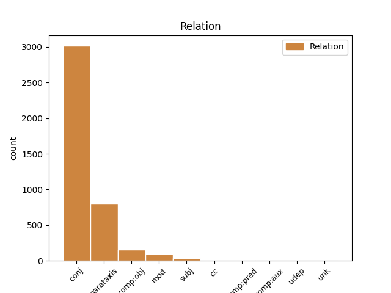
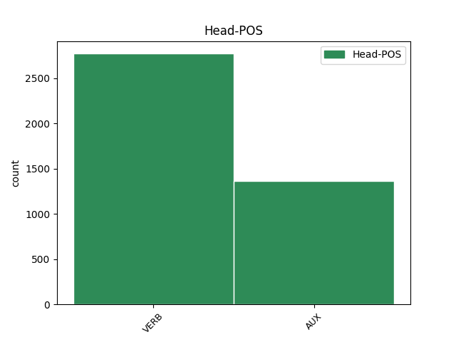
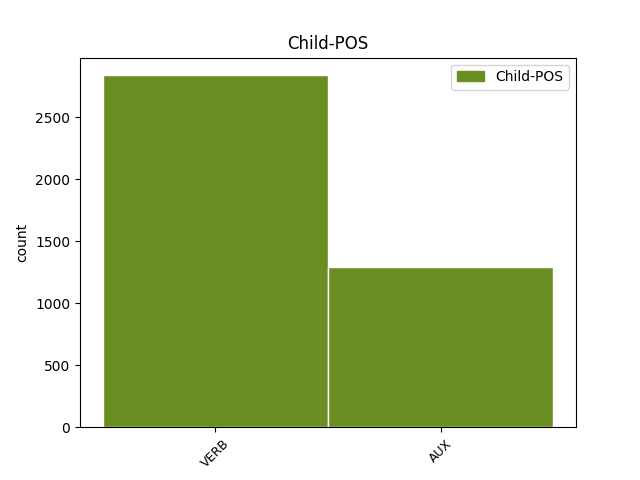

Distribution of features within this leaf



Agreement Rules sorted by frequency.
1 En _ _ _ _ 0 _ _ _
2 1991 _ _ _ _ 0 _ _ _
3 , _ _ _ _ 0 _ _ _
4 como _ _ _ _ 0 _ _ _
5 ya _ _ _ _ 0 _ _ _
6 está _ _ _ _ 0 _ _ _
7 indicado _ _ _ _ 0 _ _ _
8 en _ _ _ _ 0 _ _ _
9 el _ _ _ _ 0 _ _ _
10 párrafo _ _ _ _ 0 _ _ _
11 anterior _ _ _ _ 0 _ _ _
12 , _ _ _ _ 0 _ _ _
13 se _ _ _ _ 0 _ _ _
14 creó crear VERB _ Mood=Ind|Number=Sing|Person=3|Tense=Past|VerbForm=Fin 0 _ _ _
15 un _ _ _ _ 0 _ _ _
16 equipo _ _ _ _ 0 _ _ _
17 ad _ _ _ _ 0 _ _ _
18 hoc _ _ _ _ 0 _ _ _
19 para _ _ _ _ 0 _ _ _
20 averiguar _ _ _ _ 0 _ _ _
21 como _ _ _ _ 0 _ _ _
22 se _ _ _ _ 0 _ _ _
23 podía _ _ _ _ 0 _ _ _
24 desarrollar _ _ _ _ 0 _ _ _
25 el _ _ _ _ 0 _ _ _
26 Dialogo _ _ _ _ 0 _ _ _
27 Social _ _ _ _ 0 _ _ _
28 , _ _ _ _ 0 _ _ _
29 este _ _ _ _ 0 _ _ _
30 equipo _ _ _ _ 0 _ _ _
31 estaba estar AUX _ Mood=Ind|Number=Sing|Person=3|Tense=Imp|VerbForm=Fin 14 parataxis _ _
32 formado _ _ _ _ 0 _ _ _
33 por _ _ _ _ 0 _ _ _
34 representantes _ _ _ _ 0 _ _ _
35 de _ _ _ _ 0 _ _ _
36 todas _ _ _ _ 0 _ _ _
37 las _ _ _ _ 0 _ _ _
38 organizaciones _ _ _ _ 0 _ _ _
39 relacionadas _ _ _ _ 0 _ _ _
40 con _ _ _ _ 0 _ _ _
41 CES _ _ _ _ 0 _ _ _
42 , _ _ _ _ 0 _ _ _
43 UNICE _ _ _ _ 0 _ _ _
44 y _ _ _ _ 0 _ _ _
45 CEEP _ _ _ _ 0 _ _ _
46 ; _ _ _ _ 0 _ _ _
Disagree Examples:
1 Al _ _ _ _ 0 _ _ _
2 final _ _ _ _ 0 _ _ _
3 , _ _ _ _ 0 _ _ _
4 Calvin _ _ _ _ 0 _ _ _
5 y _ _ _ _ 0 _ _ _
6 Rusty _ _ _ _ 0 _ _ _
7 , _ _ _ _ 0 _ _ _
8 así _ _ _ _ 0 _ _ _
9 como _ _ _ _ 0 _ _ _
10 los _ _ _ _ 0 _ _ _
11 otros _ _ _ _ 0 _ _ _
12 novatos _ _ _ _ 0 _ _ _
13 , _ _ _ _ 0 _ _ _
14 son _ _ _ _ 0 _ _ _
15 nombrados _ _ _ _ 0 _ _ _
16 hermanos _ _ _ _ 0 _ _ _
17 en _ _ _ _ 0 _ _ _
18 sus _ _ _ _ 0 _ _ _
19 respectivas _ _ _ _ 0 _ _ _
20 fraternidades _ _ _ _ 0 _ _ _
21 , _ _ _ _ 0 _ _ _
22 mientras _ _ _ _ 0 _ _ _
23 que _ _ _ _ 0 _ _ _
24 Frannie _ _ _ _ 0 _ _ _
25 se _ _ _ _ 0 _ _ _
26 marcha marcha VERB _ Mood=Ind|Number=Sing|Person=3|Tense=Pres|VerbForm=Fin 0 _ _ _
27 y _ _ _ _ 0 _ _ _
28 crea creer VERB _ Mood=Sub|Number=Sing|Person=3|Tense=Pres|VerbForm=Fin 26 conj _ _
29 una _ _ _ _ 0 _ _ _
30 nueva _ _ _ _ 0 _ _ _
31 fraternidad _ _ _ _ 0 _ _ _
32 , _ _ _ _ 0 _ _ _
33 llevándo _ _ _ _ 0 _ _ _
34 se _ _ _ _ 0 _ _ _
35 a _ _ _ _ 0 _ _ _
36 muchas _ _ _ _ 0 _ _ _
37 de _ _ _ _ 0 _ _ _
38 las _ _ _ _ 0 _ _ _
39 hermanas _ _ _ _ 0 _ _ _
40 de _ _ _ _ 0 _ _ _
41 ΖΒΖ _ _ _ _ 0 _ _ _
42 con _ _ _ _ 0 _ _ _
43 ella _ _ _ _ 0 _ _ _
44 . _ _ _ _ 0 _ _ _
1 A _ _ _ _ 0 _ _ _
2 partir _ _ _ _ 0 _ _ _
3 de _ _ _ _ 0 _ _ _
4 el _ _ _ _ 0 _ _ _
5 mes _ _ _ _ 0 _ _ _
6 de _ _ _ _ 0 _ _ _
7 octubre _ _ _ _ 0 _ _ _
8 , _ _ _ _ 0 _ _ _
9 todos _ _ _ _ 0 _ _ _
10 los _ _ _ _ 0 _ _ _
11 usuarios _ _ _ _ 0 _ _ _
12 que _ _ _ _ 0 _ _ _
13 entren entrar VERB _ Mood=Sub|Number=Plur|Person=3|Tense=Pres|VerbForm=Fin 0 _ _ _
14 en _ _ _ _ 0 _ _ _
15 la _ _ _ _ 0 _ _ _
16 web _ _ _ _ 0 _ _ _
17 , _ _ _ _ 0 _ _ _
18 compartan compartir VERB _ Mood=Ind|Number=Plur|Person=3|Tense=Pres|VerbForm=Fin 13 conj _ _
19 opiniones _ _ _ _ 0 _ _ _
20 y _ _ _ _ 0 _ _ _
21 voten _ _ _ _ 0 _ _ _
22 por _ _ _ _ 0 _ _ _
23 su _ _ _ _ 0 _ _ _
24 " _ _ _ _ 0 _ _ _
25 Quality _ _ _ _ 0 _ _ _
26 Hunter _ _ _ _ 0 _ _ _
27 " _ _ _ _ 0 _ _ _
28 preferido _ _ _ _ 0 _ _ _
29 tendrán _ _ _ _ 0 _ _ _
30 la _ _ _ _ 0 _ _ _
31 oportunidad _ _ _ _ 0 _ _ _
32 de _ _ _ _ 0 _ _ _
33 conseguir _ _ _ _ 0 _ _ _
34 un _ _ _ _ 0 _ _ _
35 vuelo _ _ _ _ 0 _ _ _
36 de _ _ _ _ 0 _ _ _
37 ida _ _ _ _ 0 _ _ _
38 y _ _ _ _ 0 _ _ _
39 vuelta _ _ _ _ 0 _ _ _
40 para _ _ _ _ 0 _ _ _
41 dos _ _ _ _ 0 _ _ _
42 personas _ _ _ _ 0 _ _ _
43 a _ _ _ _ 0 _ _ _
44 cualquiera _ _ _ _ 0 _ _ _
45 de _ _ _ _ 0 _ _ _
46 los _ _ _ _ 0 _ _ _
47 destinos _ _ _ _ 0 _ _ _
48 de _ _ _ _ 0 _ _ _
49 Finnair _ _ _ _ 0 _ _ _
50 en _ _ _ _ 0 _ _ _
51 Europa _ _ _ _ 0 _ _ _
52 o _ _ _ _ 0 _ _ _
53 Asia _ _ _ _ 0 _ _ _
54 . _ _ _ _ 0 _ _ _
1 A _ _ _ _ 0 _ _ _
2 partir _ _ _ _ 0 _ _ _
3 de _ _ _ _ 0 _ _ _
4 el _ _ _ _ 0 _ _ _
5 mes _ _ _ _ 0 _ _ _
6 de _ _ _ _ 0 _ _ _
7 octubre _ _ _ _ 0 _ _ _
8 , _ _ _ _ 0 _ _ _
9 todos _ _ _ _ 0 _ _ _
10 los _ _ _ _ 0 _ _ _
11 usuarios _ _ _ _ 0 _ _ _
12 que _ _ _ _ 0 _ _ _
13 entren _ _ _ _ 0 _ _ _
14 en _ _ _ _ 0 _ _ _
15 la _ _ _ _ 0 _ _ _
16 web _ _ _ _ 0 _ _ _
17 , _ _ _ _ 0 _ _ _
18 compartan compartir VERB _ Mood=Ind|Number=Plur|Person=3|Tense=Pres|VerbForm=Fin 0 _ _ _
19 opiniones _ _ _ _ 0 _ _ _
20 y _ _ _ _ 0 _ _ _
21 voten votar VERB _ Mood=Imp|Number=Plur|Person=3|VerbForm=Fin 18 conj _ _
22 por _ _ _ _ 0 _ _ _
23 su _ _ _ _ 0 _ _ _
24 " _ _ _ _ 0 _ _ _
25 Quality _ _ _ _ 0 _ _ _
26 Hunter _ _ _ _ 0 _ _ _
27 " _ _ _ _ 0 _ _ _
28 preferido _ _ _ _ 0 _ _ _
29 tendrán _ _ _ _ 0 _ _ _
30 la _ _ _ _ 0 _ _ _
31 oportunidad _ _ _ _ 0 _ _ _
32 de _ _ _ _ 0 _ _ _
33 conseguir _ _ _ _ 0 _ _ _
34 un _ _ _ _ 0 _ _ _
35 vuelo _ _ _ _ 0 _ _ _
36 de _ _ _ _ 0 _ _ _
37 ida _ _ _ _ 0 _ _ _
38 y _ _ _ _ 0 _ _ _
39 vuelta _ _ _ _ 0 _ _ _
40 para _ _ _ _ 0 _ _ _
41 dos _ _ _ _ 0 _ _ _
42 personas _ _ _ _ 0 _ _ _
43 a _ _ _ _ 0 _ _ _
44 cualquiera _ _ _ _ 0 _ _ _
45 de _ _ _ _ 0 _ _ _
46 los _ _ _ _ 0 _ _ _
47 destinos _ _ _ _ 0 _ _ _
48 de _ _ _ _ 0 _ _ _
49 Finnair _ _ _ _ 0 _ _ _
50 en _ _ _ _ 0 _ _ _
51 Europa _ _ _ _ 0 _ _ _
52 o _ _ _ _ 0 _ _ _
53 Asia _ _ _ _ 0 _ _ _
54 . _ _ _ _ 0 _ _ _
1 Los _ _ _ _ 0 _ _ _
2 escritos _ _ _ _ 0 _ _ _
3 que _ _ _ _ 0 _ _ _
4 pasaron _ _ _ _ 0 _ _ _
5 de _ _ _ _ 0 _ _ _
6 generación _ _ _ _ 0 _ _ _
7 en _ _ _ _ 0 _ _ _
8 generación _ _ _ _ 0 _ _ _
9 a _ _ _ _ 0 _ _ _
10 través _ _ _ _ 0 _ _ _
11 de _ _ _ _ 0 _ _ _
12 los _ _ _ _ 0 _ _ _
13 caciques _ _ _ _ 0 _ _ _
14 de _ _ _ _ 0 _ _ _
15 la _ _ _ _ 0 _ _ _
16 comunidad _ _ _ _ 0 _ _ _
17 Ah _ _ _ _ 0 _ _ _
18 Canul _ _ _ _ 0 _ _ _
19 , _ _ _ _ 0 _ _ _
20 fueron ser AUX _ Mood=Ind|Number=Plur|Person=3|Tense=Past|VerbForm=Fin 0 _ _ _
21 obsequiados _ _ _ _ 0 _ _ _
22 a _ _ _ _ 0 _ _ _
23 Faustino _ _ _ _ 0 _ _ _
24 Francio _ _ _ _ 0 _ _ _
25 amigo _ _ _ _ 0 _ _ _
26 de _ _ _ _ 0 _ _ _
27 el _ _ _ _ 0 _ _ _
28 historiador _ _ _ _ 0 _ _ _
29 Juan _ _ _ _ 0 _ _ _
30 Francisco _ _ _ _ 0 _ _ _
31 Molina _ _ _ _ 0 _ _ _
32 Solís _ _ _ _ 0 _ _ _
33 autor _ _ _ _ 0 _ _ _
34 de _ _ _ _ 0 _ _ _
35 el _ _ _ _ 0 _ _ _
36 libro _ _ _ _ 0 _ _ _
37 " _ _ _ _ 0 _ _ _
38 Historia _ _ _ _ 0 _ _ _
39 de _ _ _ _ 0 _ _ _
40 el _ _ _ _ 0 _ _ _
41 Descubrimiento _ _ _ _ 0 _ _ _
42 y _ _ _ _ 0 _ _ _
43 Conquista _ _ _ _ 0 _ _ _
44 de _ _ _ _ 0 _ _ _
45 Yucatán _ _ _ _ 0 _ _ _
46 " _ _ _ _ 0 _ _ _
47 , _ _ _ _ 0 _ _ _
48 más _ _ _ _ 0 _ _ _
49 tarde _ _ _ _ 0 _ _ _
50 el _ _ _ _ 0 _ _ _
51 códice _ _ _ _ 0 _ _ _
52 llegaría llegar VERB _ Mood=Cnd|Number=Sing|Person=3|VerbForm=Fin 20 conj _ _
53 a _ _ _ _ 0 _ _ _
54 las _ _ _ _ 0 _ _ _
55 manos _ _ _ _ 0 _ _ _
56 de _ _ _ _ 0 _ _ _
57 el _ _ _ _ 0 _ _ _
58 obispo _ _ _ _ 0 _ _ _
59 Crescencio _ _ _ _ 0 _ _ _
60 Carrillo _ _ _ _ 0 _ _ _
61 y _ _ _ _ 0 _ _ _
62 Ancona _ _ _ _ 0 _ _ _
63 , _ _ _ _ 0 _ _ _
64 y _ _ _ _ 0 _ _ _
65 sería _ _ _ _ 0 _ _ _
66 agregado _ _ _ _ 0 _ _ _
67 a _ _ _ _ 0 _ _ _
68 el _ _ _ _ 0 _ _ _
69 Chilam _ _ _ _ 0 _ _ _
70 Balam _ _ _ _ 0 _ _ _
71 de _ _ _ _ 0 _ _ _
72 Chumayel _ _ _ _ 0 _ _ _
73 . _ _ _ _ 0 _ _ _
1 La _ _ _ _ 0 _ _ _
2 relación _ _ _ _ 0 _ _ _
3 mieloeritroide _ _ _ _ 0 _ _ _
4 varía variar VERB _ Mood=Cnd|Number=Sing|Person=3|VerbForm=Fin 0 _ _ _
5 entre _ _ _ _ 0 _ _ _
6 10:1 _ _ _ _ 0 _ _ _
7 y _ _ _ _ 0 _ _ _
8 50:1 _ _ _ _ 0 _ _ _
9 ( _ _ _ _ 0 _ _ _
10 lo _ _ _ _ 0 _ _ _
11 normal _ _ _ _ 0 _ _ _
12 es ser VERB _ Mood=Ind|Number=Sing|Person=3|Tense=Pres|VerbForm=Fin 4 parataxis _ _
13 de _ _ _ _ 0 _ _ _
14 2:1 _ _ _ _ 0 _ _ _
15 a _ _ _ _ 0 _ _ _
16 4,5:1 _ _ _ _ 0 _ _ _
17 ) _ _ _ _ 0 _ _ _
18 . _ _ _ _ 0 _ _ _